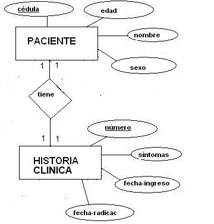

Como traducir una relación uno a uno?
A pesar de que la relación uno a uno se presenta esporádicamente en los modelos del mundo real, se tiene una regla de traducción para ella. Como se podrá ver, la relación uno a uno tiene tres posibilidades de traducción, dos de las cuales son válidas.
La relación uno a uno entre 2 entidades se traduce colocando la clave de cualquiera de las entidades como clave foránea de la tabla correspondiente a la otra entidad.
Ejemplo:

Fuente Propia.
Para traducir la entidad Paciente utilizamos la regla de traducción de las entidades normales:
| PACIENTE |
|
Cedula PK Nombre Edad Sexo |
Lo mismo hacemos para traducir la entidad Historia Clínica:
| HISTORIA CLINICA |
|
Numero-Historia PK Fecha-Radicacion Fecha-Ingreso Síntomas |
Hasta este punto tenemos dos tablas sin ningún tipo de relación. Son tablas aisladas. Por lo tanto nos falta reflejar la relación que existe entre ellas, es decir, reflejar que un paciente tiene una sola historia clínica y una historia clínica pertenece a un solo paciente. Como se pudo ver antes, la regla de traducción del atributo multivalorado promulga que, en lo posible, una tabla no debe poseer atributos multivalorados, a no ser que no se vayan a hacer consultas por ese atributo. Teniendo como premisa esto, debemos relacionar ambas tablas, teniendo cuidado de no generar atributos multivalorados.
Para este fin, existen tres posibilidades de relación:
- Poner la clave de la entidad Paciente como clave foránea en la tabla Historia Clínica.
Las tablas quedan de la siguiente manera:
| PACIENTE |
|
Cedula PK Nombre Edad Sexo |
| HISTORIA CLINICA |
|
Numero-Historia PK Fecha-Radicacion Fecha-Ingreso Síntomas Cedula-Paciente |
|
FK: Cedula-Paciente referencia a PACIENTE(Cedula) |
- Poner la clave de la entidad Historia como clave foránea en la tabla Paciente.
Las tablas quedan de la siguiente manera:
| PACIENTE |
|
Cedula PK Nombre Edad Sexo Nro-Historia |
|
FK: Nro-Historia referencia a HISTORIACLINICA(Numero-Historia) |
| HISTORIA CLINICA |
|
Numero-Historia PK Fecha-Radicacion Fecha-Ingreso Síntomas |
- Las dos posibilidades anteriores conjugadas.
Las tablas quedan de la siguiente manera:
| PACIENTE |
|
Cedula PK Nombre Edad Sexo Nro-Historia |
| FK: Nro-Historia referencia a HISTORIACLINICA(Numero-Historia) |
| HISTORIA CLINICA |
|
Numero-Historia PK Fecha-Radicacion Fecha-Ingreso Síntomas Cedula-Paciente |
| FK: Cedula-Paciente referencia a PACIENTE(Cedula) |
Existen varios aspectos para aclarar sobre las tres posibilidades anteriores:
- Definitivamente nos damos cuenta que si existen las dos primeras posibilidades, la tercera posibilidad es redundante. Con poner una sola clave foránea en alguna de las tablas basta para relacionar ambas tablas. Por lo tanto, la tercera posibilidad se desecha.
- Las claves foráneas se definen tal y como se muestra en el ejemplo, es decir, enunciando el nombre de la clave foránea y diciendo a que tabla y campo hace referencia (o apunta a). Por ejemplo, cedula-paciente referencia a Paciente(cedula).
- Analizando la primera posibilidad, nos damos cuenta que la clave foránea generada no queda siendo multivalorada ya que, por modelamiento sabemos, que cada historia clínica corresponde a un solo paciente; es decir, cada una de las tuplas que hay en la tabla Historia, van a contener un solo valor para el campo Cedula-paciente. Por lo tanto, esta posibilidad es válida.
- Si miramos la segunda posibilidad, nos damos cuenta exactamente de lo deducido en el numeral c). Esto lo concluimos porque sabemos que cada paciente tiene una sola historia clínica, es decir, cada tupla de la tabla Paciente van a tener un solo valor en el campo Nro-historia. Por lo tanto, esta posibilidad también es válida.
Por lo tanto concluimos que, desde el punto de vista teórico, cualquiera de las dos primeras posibilidades es la traducción correcta. En la práctica, pondremos la clave foránea que mas le convenga al usuario para hacer sus consultas. Es decir, con la relación entre PACIENTE e HISTORIACLINICA se pueden hacer dos consultas:
- Cuál es la historia clínica de un paciente dado?
- A cuál paciente corresponde una historia clínica dada?
Si el usuario manifiesta que con mas frecuencia va a ejecutar la primera consulta, entonces es mejor poner la clave foránea en la tabla PACIENTE.
Por el contrario, si el usuario dice que va a ejecutar la segunda consulta con mas frecuencia, entonces la opción es poner la clave foránea en la tabla HISTORIACLINICA.
Video: